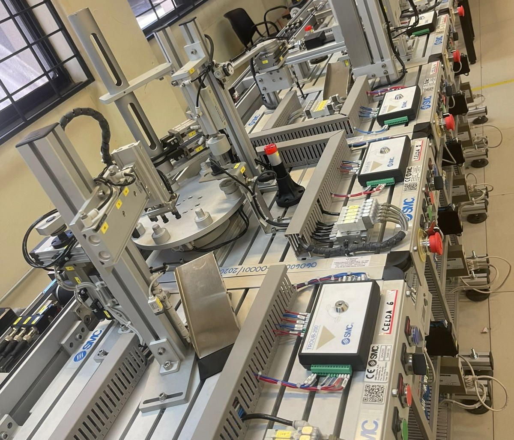

1. Identidad, Historia y Ubicación
Información General
Nombre oficial:Laboratorio de Mecatrónica
Carreras:Principalmente los estudiantes de mecatrónica son los que hacen uso del laboratorio.
Semestres:A partir del 4to semestre de la carrera los alumnos realizan prácticas en el laboratorio.
Capacidad máxima:Aproximadamente 30 personas por laboratorio.
Historia y Ubicación
Año de fundación:Año 2010
¿Por qué se creó?:El laboratorio fue creado con la intención de que los alumnos apliquen los conocimientos teóricos y los pongan en práctica.
Ubicación:Campus Boillot
2. Filosofía y Organización
Misión, Visión y Valores
Misión:Que los estudiantes tengan una buena preparación para el mundo laboral, de manera que dentro del laboratorio vean situaciones reales y actuales que se presentan en la industria.
Visión:Convertirse en el espacio de aprendizaje integral, proporcionando herramientas que permitan al estudiante transformar ideas en soluciones reales para la sociedad.
Valores:Respeto al docente y compañeros; Convivencia, Responsabilidad
Organigrama
Jefe de departamento:Dr. Felipe Alberto Machorro Fernandez
Encargado directo:Sergio Enrique Cedillo Rodriguez

3. Prácticas y Materias
Materias y Proyectos
Materias participantes:Manufactura Avanzada, PLC, Automatización, Circuitos hidráulicos y neumáticos; y Tópicos de automatización.
Proyectos finales:Programas en CNC.
¿Interdisciplinarias?:Gestión y materiales son carreras ligadas a este laboratorio.
Dinámica de Prácticas
Tipo de prácticas:Prácticas manuales en donde se trabaja con torno o la fresadora o bien, prácticas orientadas a la automatización con CNC.
¿Son obligatorias?:Después de las materias enfocadas en la teoría, pasan a las materias donde se aplican los conocimientos obtenidos
y se realizan las prácticas, por lo que es obligatorio realizarlas.
4. Equipo, Software y Reglamento
Equipo e Infraestructura
Equipos principales:Celdas, CNC, Fresadora, Torno, Brazo automatizado, tableros de hidráulica, tableros de neumática.
Software especializado:SolidWorks, AutoCAD
Mantenimiento:Se les da mantenimiento preventivo, por lo regular todos los días se hace un chequeo para asegurar que todo esté en buenas condicones y funcional para las prácticas.
Reglamento y Seguridad
Reglas principales:-No introducir alimentos ni bebidas.
-Todo alumno que ingrese deberá estar asesorado por un catedrático.
-Mantener el área limpia
Prohibiciones:Bebidas, alimentos, correr, gritar, ingresar con ropa holgada
Requisitos:Lentes de seguridad, bata de laboratorio, zapato cerrado.
5. Horarios, Eventos y Contacto
Horarios y Atención
Horario oficial:Lunes a viernes 7:00 am a 10:00 pm
¿Abre fines de semana?:Sí, con autorización del jefe de departamento.
¿Requiere reservación?:Sí, los docentes cada viernes reservan el laboratorio que necesiten y en el horario que necesiten de la siguiente semana.
Contacto y Eventos
Correo:Correo de Jefe de Departamento: felipe.mf@saltillo.tecnm.mx
¿Certificaciones/Talleres?:Sí, se abren las puertas para distintos eventos o recorridos a padres y/o alumnos que visitan el laboratorio.
Redes sociales:https://www.facebook.com/people/CEIMT/61566814651377/